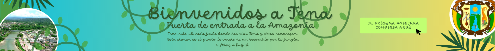

Tena es una ciudad vibrante y diversa, conocida por su rica historia, cultura y su papel
como puerta de entrada a la Amazonía ecuatoriana.Ofrece a sus visitantes la oportunidad
de explorar la naturaleza, la aventura, la cultura y la gastronomía.
La ciudad es un destino ideal para quienes buscan disfrutar de actividades
como el rafting, kayak, trekking y degustar la exótica gastronomía local.
Tena también es un lugar donde se entrelazan las raíces de las etnias Kichwa y Huaorani,
ofreciendo una rica herencia cultural y una conexión con la naturaleza.
Página creada por Estefanny Lovera